No cultivo por hidroponia, são utilizadas soluções nutritivas contendo macronutrientes e
micronutrientes essenciais. Além dos nutrientes, o pH é um parâmetro de extrema importância, uma vez que ele
afeta a preparação da solução nutritiva e a absorção dos nutrientes pelas plantas. Para o cultivo de alface,
valores de pH entre 5,5 e 6,5 são ideais para o seu desenvolvimento. As correções de pH são feitas pela
adição de compostos ácidos ou básicos, mas não devem introduzir elementos nocivos às plantas. Na tabela, são
apresentados alguns dados da composição da solução nutritiva de referência para esse cultivo. Também é
apresentada a composição de uma solução preparada por um produtor de cultivo hidropônico.
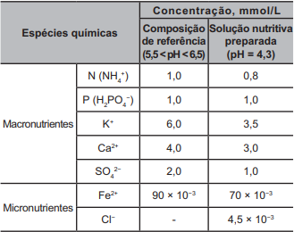
LENZI, E.; FAVERO, L. O. B.; LUCHESE, E. B. Introdução à química da água:
ciência,
vida e sobrevivência. Rio de Janeiro: LTC, 2012 (adaptado).
Para correção do pH da solução nutritiva preparada, esse produtor pode empregar uma solução de
Questao 92
O sino dos ventos é composto por várias barras metálicas de mesmo material e espessura,
mas de comprimentos diferentes, conforme a figura.
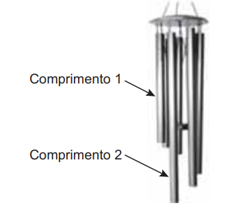
Considere f1 e v1, respectivamente, como a frequência fundamental e a velocidade de propagação do som
emitido pela barra de menor comprimento, e f2 e v2 são essas mesmas grandezas para o som emitido pela barra
de maior comprimento.
As relações entre as frequências fundamentais e entre as velocidades de propagação são, respectivamente,
Questao 93
O polvo mimético apresenta padrões cromáticos e comportamentos muito curiosos.
Frequentemente, muda a orientação de seus tentáculos, assemelhando-se a alguns animais. As imagens 1, 3 e
5 apresentam polvos mimetizando, respectivamente, um peixe-linguado (2), um peixe-leão (4) e uma
serpente-marinha (6).
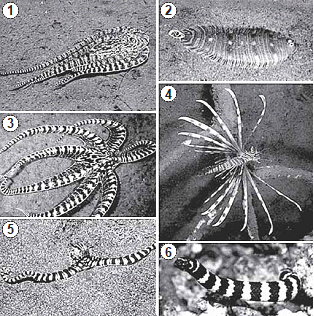
NORMAN, M. D.; FINN, J.; TREGENZA, T. Dynamic mimicry in an Indo-Malayan
octopus. In: Proceedings of the Royal Society B: Biological Sciences, n. 268, out. 2001. Disponível em:
www.researchgate.net. Acesso em: 15 mar. 2014 (adaptado).
Do ponto de vista evolutivo, a capacidade apresentada se estabeleceu porque os polvos
Questao 94
A figura foi extraída de um antigo jogo para computadores, chamado Bang! Bang!
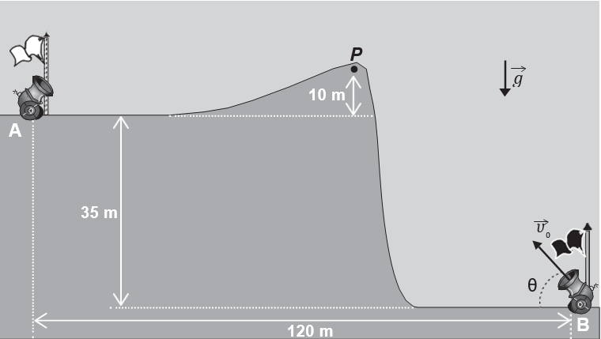
No jogo, dois competidores controlam os canhões A e B, disparando balas alternadamente
com o objetivo
de atingir o canhão do adversário; para isso, atri em valores estimados para o módulo da velocidade
inicial de disparo 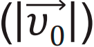 e para o ângulo
de disparo ().
Em determinado momento de uma partida, o competidor B deve disparar; ele sabe que a bala
disparada
anteriormente, = 53°, passou tangenciando
o ponto P.
No jogo, 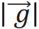 é igual a 10 m/s2.
Considere sen 53° = 0,8, cos 53° = 0,6 e desprezível a ação de forças dissipativas.
Com base nas distâncias dadas e mantendo o último ângulo de disparo, qual deveria ser,
aproximadamente,o menor valor de 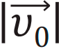
que permitiria ao disparo efetuado pelo canhão B atingir o canhão A?
Questao 95
Os pesticidas organoclorados foram amplamente empregados na agricultura, contudo, em razão das suas
elevadas toxicidades e persistências no meio ambiente, eles foram banidos. Considere a aplicação de
500 g de um pesticida organoclorado em uma cultura e que, em certas condições, o tempo de meia-vida do
pesticida no solo seja de 5 anos.
A massa do pesticida no decorrer de 35 anos será mais próxima de
Questao 96
A sequência de nucleotídeos do RNA mensageiro presentes em um gene de um fungo,
constituída de sete códons, está escrita a seguir.
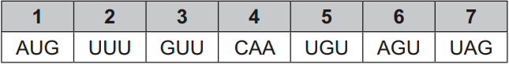
Pesquisadores submeteram a sequência a mutações independentes. Sabe-se que os códons UAG e UAA são
terminais, ou seja, indicam a interrupção da tradução.
Qual mutação produzirá a menor proteína?
Questao 97
A simples atitude de não jogar direto no lixo ou no ralo da pia o óleo de cozinha usado pode contribuir para a redução da poluição ambiental. Mas o que fazer com o óleo vegetal que não será mais usado? Não existe um modelo ideal de descarte, mas uma alternativa simples tem sido reaproveitá-lo para fazer sabão. Para isso, são necessários, além do próprio óleo, água e soda cáustica.
LOBO, I. Sabão feito com óleo de cozinha. Disponível em: http://pga.pgr.mpf.gov.br.
Acesso em: 29 fev. 2012 (adaptado).
Com base no texto, a reação química que permite o reaproveitamento do óleo vegetal é denominada
Questao 98
Durante o desenvolvimento embrionário humano ocorre uma comunicação entre os átrios direito e esquerdo através do forame oval (ou forame de Botal). Essa comunicação não causa prejuízos à circulação do bebê em formação, exceto se ela perdurar após o nascimento.
Os prejuízos no período embrionário são evitados porque a circulação fetal se assemelha à dos(as)
Questao 99
Na cidade de São Paulo, as ilhas de calor são responsáveis pela alteração da direção do fluxo da brisa marítima que deveria atingir a região de mananciais. Mas, ao cruzar a ilha de calor, a brisa marítima agora encontra um fluxo de ar vertical, que transfere para ela energia térmica absorvida das superfícies quentes da cidade, deslocando-a para altas altitudes. Dessa maneira, há condensação e chuvas fortes no centro da cidade, em vez de na região de mananciais. A imagem apresenta os três subsistemas que trocam energia nesse fenômeno.
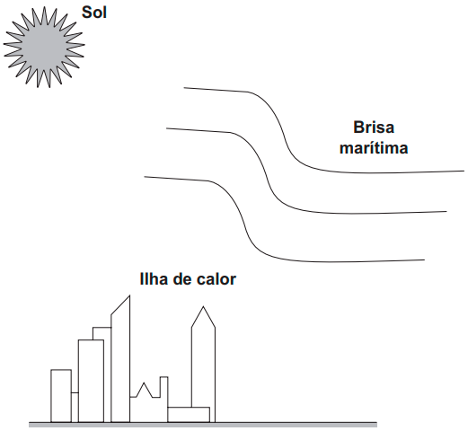
No processo de fortes chuvas no centro da cidade de São Paulo, há dois mecanismos dominantes de transferência de calor: entre o Sol e a ilha de calor, e entre a ilha de calor e a brisa marítima.
VIVEIROS, M. Ilhas de calor afastam chuvas de represas. Disponível em: www2.feis.unesp.br. Acesso em: 3 dez. 2019 (adaptado).
Esses mecanismos são, respectivamente,
Questao 100
No seu estudo sobre a queda dos corpos, Aristóteles afirmava que se abandonarmos corpos leves e pesados de uma mesma altura, o mais pesado chegaria mais rápido ao solo. Essa ideia está apoiada em algo que é difícil de refutar, a observação direta da realidade baseada no senso comum.
Após uma aula de física, dois colegas estavam discutindo sobre a queda dos corpos, e um tentava convencer o outro de que tinha razão:
Colega A: “O corpo mais pesado cai mais rápido que um menos pesado, quando largado de uma mesma altura. Eu provo, largando uma pedra e uma rolha. A pedra chega antes. Pronto! Tá provado!”.
Colega B: “Eu não acho! Peguei uma folha de papel esticado e deixei cair. Quando amassei, ela caiu mais rápido. Como isso é possível? Se era a mesma folha de papel, deveria cair do mesmo jeito. Tem que ter outra explicação!”.
HÜLSENDEGER, M. Uma análise das concepções dos alunos sobre a queda dos corpos.
Caderno Brasileiro de Ensino de Física, n. 3, dez. 2004 (adaptado).
O aspecto físico comum que explica a diferença de comportamento dos corpos em queda nessa discussão é o(a)
Questao 101
A obtenção de etanol utilizando a cana-de-açúcar envolve a fermentação dos monossacarídeos formadores da sacarose contida no melaço. Um desses formadores
é a glicose 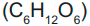, cuja fermentação produz cerca de
50 g de etanol a partir de 100 g de glicose, conforme a equação química descrita.
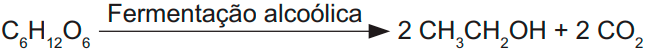
Em uma condição específica de fermentação, obtém-se 80% de conversão em etanol que, após sua purificação, apresenta densidade igual a 0,80 g/mL. O melaço utilizado apresentou 50 kg de monossacarídeos na forma de glicose.
O volume de etanol, em litro, obtido nesse processo é mais próximo de
Questao 102
É possível ligar aparelhos elétricos de baixa corrente utilizando materiais comuns de laboratório no lugar das tradicionais pilhas. A ilustração apresenta uma montagem que faz funcionar um cronômetro digital.
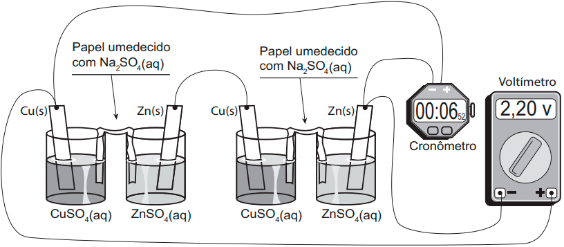
Utilizando a representação de projetos elétricos, o circuito equivalente a esse sistema é
Questao 103
Um técnico analisou um lote de analgésicos que supostamente estava fora das especificações. A composição prevista era 100 mg de ácido acetilsalicílico por comprimido (princípio ativo, cuja estrutura está apresentada na figura), além do amido e da celulose (componentes inertes). O técnico realizou os seguintes testes:
1) obtenção da massa do comprimido;
2) medição da densidade do comprimido;
3) verificação do pH com papel indicador;
4) determinação da temperatura de fusão do comprimido;
5) titulação com solução aquosa de NaOH.
Após a realização dos testes, o lote do medicamento foi reprovado porque a quantidade de ácido acetilsalicílico por comprimido foi de apenas 40% da esperada.
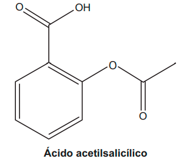
O teste que permitiu reprovar o lote de analgésicos foi o de número
Questao 104
O rompimento da barragem de rejeitos de mineração no município mineiro de Mariana e o derramamento de produtos tóxicos nas águas do Rio Doce, ocorridos em 2015, ainda têm consequências para os organismos
que habitam o Parque Nacional Marinho de Abrolhos, localizado a mais de 1 000 quilômetros de distância. Esse desastre ambiental afetou o fitoplâncton, as esponjas, as algas macroscópicas, os peixes herbívoros e os golfinhos.
FRAINER, G.; SICILIANO, S.; TAVARES, D. C. Franciscana calls for help: [...]. International Whaling Commission, Conference Paper, jun. 2016 (adaptado).
Concentrações mais elevadas dos compostos citados são encontradas em
Questao 105
Duas esferas carregadas com cargas iguais em módulo e sinais contrários estão ligadas por uma haste rígida isolante na forma de haltere. O sistema se movimenta sob ação da gravidade numa região que tem um campo magnético horizontal uniforme 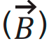, da esquerda para a direita. A imagem apresenta o sistema visto de cima para baixo, no mesmo sentido da aceleração da gravidade 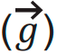 que atua na região.
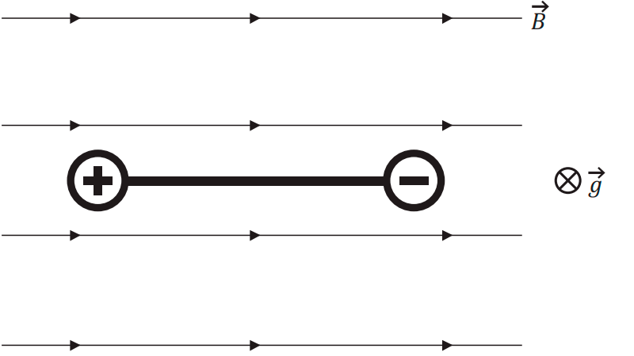
Visto de cima, o diagrama esquemático das forças magnéticas que atuam no sistema, no momento inicial em que as cargas penetram na região de campo magnético, está representado em
Questao 106
A icterícia, popularmente conhecida por amarelão, é uma patologia frequente em recém-nascidos. Um bebê com icterícia não consegue metabolizar e excretar de forma eficiente a bilirrubina. Com isso, o acúmulo dessa substância deixa-o com a pele amarelada. A fototerapia é um tratamento da icterícia neonatal, que consiste na irradiação de luz no bebê. Na presença de luz, a bilirrubina é convertida no seu isômero lumirrubina que, por ser mais solúvel em água, é excretada pela bile ou pela urina. A imagem ilustra o que ocorre nesse tratamento.
MOREIRA, M. et al. O recém-nascido de alto risco: teoria e prática do cuidar [on-line]. Rio de Janeiro: Fiocruz, 2004 (adaptado).
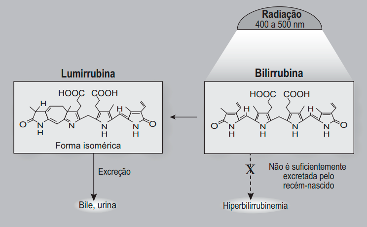
Na fototerapia, a luz provoca a conversão da bilirrubina no seu isômero
Questao 107
Analisando a ficha técnica de um automóvel popular, verificam-se algumas características em relação ao seu desempenho. Considerando o mesmo automóvel em duas versões, uma delas funcionando a álcool e outra, a gasolina, tem-se os dados apresentados no quadro, em relação ao desempenho de cada motor.
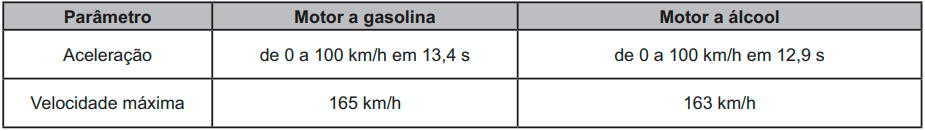
Considerando desprezível a resistência do ar, qual versão apresenta a maior potência?
Questao 108
TEXTO I
No cordel intitulado Senhor dos Anéis, de autoria de Gonçalo Ferreira da Silva, lê-se a sextilha:
A distância em relação
Ao nosso planeta amado
Pouco menos que a do Sol
Ele está distanciado
E menos denso que a água
Quando no normal estado
MEDEIROS, A.; AGRA, J. T. M., A astronomia na literatura de cordel,
Física na Escola, n. 1, abr. 2010 (fragmento).
TEXTO II
Distâncias médias dos planetas ao Sol e suas densidades médias
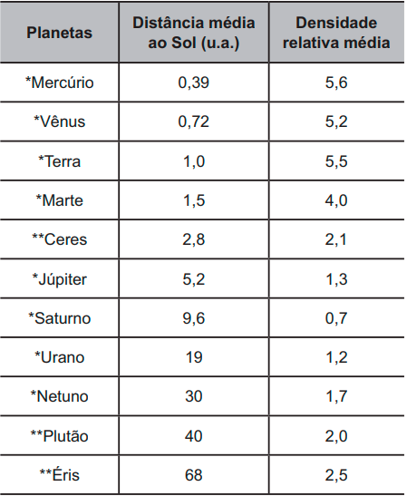
u.a. = 149 600 000 km, é a unidade astronômica, *Planeta clássico, **Planeta-anão
Considerando os versos da sextilha e as informações da tabela, a qual planeta o cordel faz referência?
Questao 109
Cientistas da Universidade de New South Wales, na Austrália, demonstraram em 2012 que a Lei de Ohm é válida mesmo para fios finíssimos, cuja área da seção reta compreende alguns poucos átomos. A tabela apresenta as áreas e comprimentos de alguns dos fios construídos (respectivamente com as mesmas unidades de medida). Considere que a resistividade mantém-se constante para todas as geometrias (uma aproximação confirmada pelo estudo).
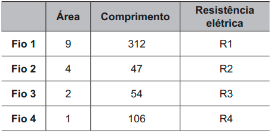
WEBER, S. B. et al. Ohm’s Law Survives to the Atomic Scale.
Science, n. 335, jan. 2012 (adaptado).
As resistências elétricas dos fios, em ordem crescente, são
Questao 110
Organismos autótrofos e heterótrofos realizam processos complementares que associam os ciclos do carbono e do oxigênio. O carbono fixado pela energia luminosa ou a partir de compostos inorgânicos é eventualmente degradado pelos organismos, resultando em fontes de carbono como metano ou gás carbônico. Ainda, outros compostos orgânicos são catabolizados pelos seres, com menor rendimento energético, produzindo compostos secundários (subprodutos) que podem funcionar como combustíveis ambientais.
O processo metabólico associado à expressão combustíveis ambientais é a
Questao 111
Uma escola iniciou o processo educativo para implantação da coleta seletiva e destino de materiais recicláveis. Para atingir seus objetivos, a instituição planejou:
1) sensibilizar a comunidade escolar, desenvolvendo atividades em sala e extraclasse de maneira contínua;
2) capacitar o pessoal responsável pela limpeza da escola quanto aos novos procedimentos adotados com a coleta seletiva; e
3) distribuir coletores de materiais recicláveis específicos nas salas, pátio e outros ambientes para acondicionamento dos resíduos
Para completar a ação proposta no ambiente escolar, o que falta ser inserido no planejamento?
Questao 112
Os búfalos são animais considerados rústicos pelos criadores e, por isso, são deixados no campo sem controle reprodutivo. Por causa desse tipo de criação, a consanguinidade é favorecida, proporcionando o aparecimento de enfermidades, como o albinismo, defeitos cardíacos, entre outros. Separar os animais de forma adequada minimizaria a ocorrência desses problemas.
DAMÉ, M. C. F.; RIET-CORREA, F.; SCHILD, A. L. Pesq. Vet. Bras., n. 7, 2013 (adaptado).
Qual procedimento biotecnológico prévio é recomendado nessa situação?
Questao 113
O ciclo do cobre é um experimento didático em que o cobre metálico é utilizado como reagente de partida. Após uma sequência de reações (I, II, III, IV e V), o cobre retorna ao seu estado inicial ao final do ciclo.
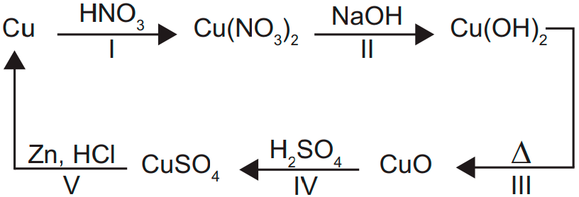
A reação de redução do cobre ocorre na etapa
Questao 114
Um dos exames clínicos mais tradicionais para medir a capacidade reflexa dos indivíduos é o exame do reflexo patelar. Esse exame consiste na estimulação da patela, um pequeno osso localizado na parte anterior da articulação do joelho, com um pequeno martelo. A resposta reflexa ao estímulo é caracterizada pelo levantamento da perna em que o estímulo foi aplicado.
Qual região específica do sistema nervoso coordena essa resposta?
Questao 115
Na montagem de uma cozinha para um restaurante, a escolha do material correto para as panelas é importante, pois a panela que conduz mais calor é capaz de cozinhar os alimentos mais rapidamente e, com isso, há economia de gás. A taxa de condução do calor depende da condutividade k do material, de sua área A, da diferença de temperatura ΔT e da espessura d do material, sendo
dada pela relação 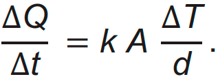 Em panelas com dois materiais, a taxa de condução é dada por 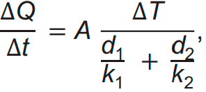 em que 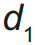 e 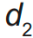 são as espessuras dos dois materiais, e 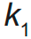 e 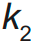 são as condutividades de cada material. Os materiais mais comuns no mercado para panelas são o alumínio (k = 20 W/m K), o ferro (k = 8 W/m K) e o aço (k = 5 W/m K) combinado com o cobre (k = 40 W/m K).
Compara-se uma panela de ferro, uma de alumínio
e uma composta de da espessura em cobre e da espessura em aço, todas com a mesma espessura total e com a mesma área de fundo.
A ordem crescente da mais econômica para a menos econômica é
Questao 116
As águas subterrâneas têm sido contaminadas pelo uso de pesticidas na agricultura. Entre as várias substâncias usualmente encontradas, algumas são apresentadas na figura. A distinção dessas substâncias pode ser feita por meio de uma análise química qualitativa, ou seja, determinando sua presença mediante a adição de um reagente específico. O hidróxido de sódio é capaz de identificar a presença de um desses pesticidas pela reação ácido-base de Brönsted-Lowry.
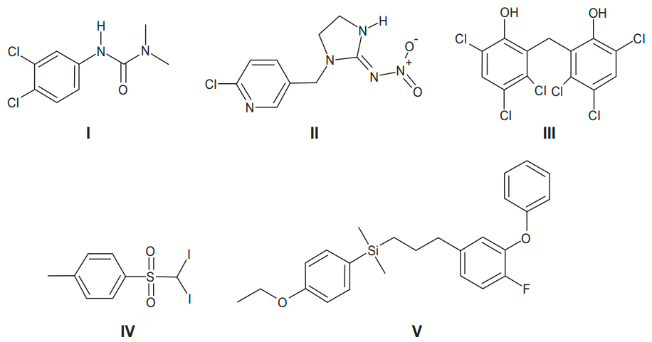
O teste positivo será observado com o pesticida
Questao 117
Com o aumento da população de suínos no Brasil, torna-se necessária a adoção de métodos para reduzir o potencial poluidor dos resíduos dessa agroindústria, uma vez que, comparativamente ao esgoto doméstico, os dejetos suínos são 200 vezes mais poluentes. Sendo assim, a utilização desses resíduos como matéria-prima na obtenção de combustíveis é uma alternativa que permite diversificar a matriz energética nacional, ao mesmo tempo em que parte dos recursos hídricos do país são preservados.
BECK, A. M. Resíduos suínos como alternativa energética sustentável. XXVII Encontro Nacional de Engenharia de Produção. Anais ENEGEP, Foz do Iguaçu, 2007 (adaptado).
O biocombustível a que se refere o texto é o
Questao 118
A curcumina, uma das substâncias que confere a cor alaranjada ao açafrão, pode auxiliar no combate à dengue quando adicionada à água de criadouros do mosquito transmissor. Essa substância acumula-se no intestino do inseto após ser ingerida com a água do criadouro e, quando ativada pela luz, induz a produção de espécies reativas de oxigênio que danificam de forma fatal o tecido do tubo digestório.
TOLEDO, K. Corante extraído do açafrão pode ser útil no combate à dengue. Disponível em: http://agencia.fapesp.br. Acesso em: 25 abr. 2015 (adaptado).
A forma de combate relatada tem como atividade o(a)
Questao 119
Com o objetivo de identificar a melhor espécie produtora de madeira para construção (com resistência mecânica e à degradação), foram analisadas as estruturas anatômicas de cinco espécies, conforme o quadro.
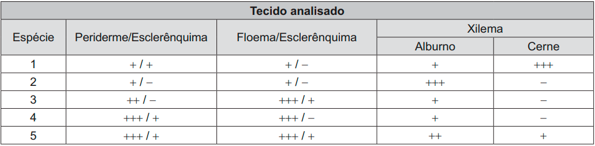
Legenda: (-) ausente, (+) presente em pequena quantidade, (++) presente em média quantidade, (+++) presente em grande quantidade.
Qual espécie corresponde ao objetivo proposto?
Questao 120
No outono, as folhas das árvores mudam de cor, de verde para tons de amarelo, castanho, laranja e vermelho. A cor verde das folhas deve-se ao pigmento clorofila. Nas plantas de folhas caducas, a produção de clorofila diminui e o tom verde desvanece, permitindo assim que outros pigmentos, como o caroteno, de coloração amarelo-alaranjado, e a antocianina, de tons avermelhados, passem a dominar a tonalidade das folhas. A coloração observada se dá em função da interação desses pigmentos com a radiação solar.
Conforme apresentado no espectro de absorção, as moléculas de clorofila absorvem a radiação solar nas regiões do azul e do vermelho, assim a luz refletida pelas folhas tem falta desses dois tons e as vemos na cor verde. Já as antocianinas absorvem a luz desde o azul até o verde. Nesse caso, a luz refletida pelas folhas que contêm antocianinas aparece conforme as cores complementares, ou seja, vermelho-alaranjado.
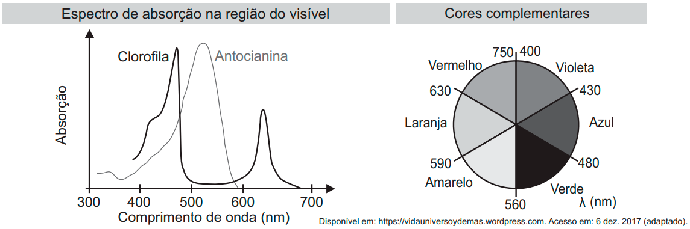
Em qual faixa do espectro visível os carotenos absorvem majoritariamente?
Questao 121
Entre 2014 e 2016, as regiões central e oeste da África sofreram uma grave epidemia de febre hemorrágica causada pelo vírus ebola, que se manifesta em até 21 dias após a infecção e cuja taxa de letalidade (enfermos que vão a óbito) pode chegar a 90%. Em regiões de clima tropical e subtropical, um outro vírus também pode causar febre hemorrágica: o vírus da dengue, que, embora tenha período de incubação menor (até 10 dias), apresenta taxa de letalidade abaixo de 1%.
Segundo as informações do texto e aplicando princípios de evolução biológica às relações do tipo patógeno-hospedeiro, qual dos dois vírus infecta seres humanos há mais tempo?
Questao 122
A imagem apresenta as etapas do funcionamento de uma estação individual para tratamento do esgoto residencial.
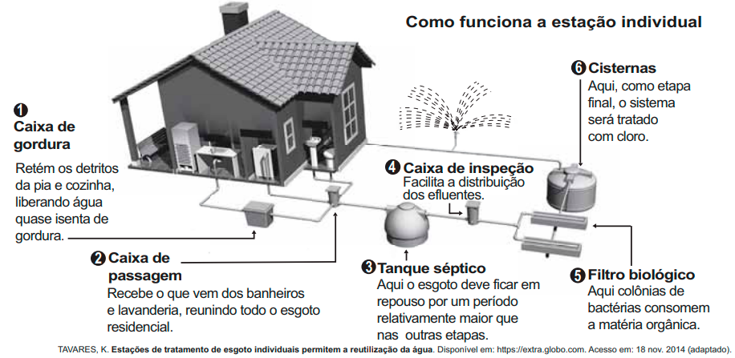
Em qual etapa decanta-se o lodo a ser separado do esgoto residencial?
Questao 123
O plantio por estaquia é um método de propagação de plantas no qual partes de um espécime são colocadas no solo para produzir novas gerações. Na floricultura, é comum utilizar o caule das roseiras para estaquia, pois a propagação da planta é positiva em razão da aplicação de auxinas na porção inferior do caule.
A utilização de auxinas no método de estaquia das roseiras contribui para
Questao 124
O emprego de células de combustível a hidrogênio pode ser uma tecnologia adequada ao transporte automotivo.
O quadro apresenta características de cinco tecnologias mais proeminentes de células de combustível.
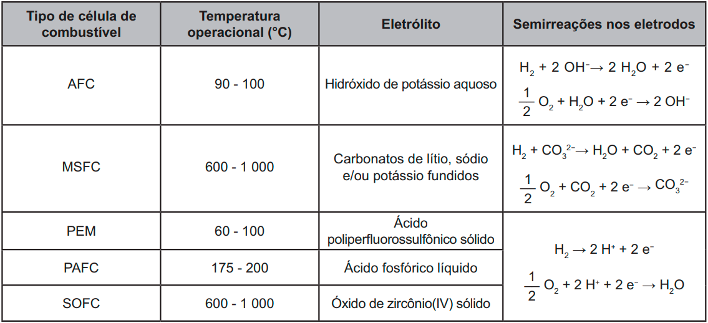
Testes operacionais com esses tipos de células têm indicado que as melhores alternativas para veículos são as que operam em baixos níveis de energia térmica, são formadas por membranas de eletrólitos poliméricos e ocorrem em meio ácido.
THOMAS, S; ZALBOWITZ, M. Full cells: green power. Los Alamos National Laboratory. Los Alamos, NM, 1999 (adaptado).
A tecnologia testada mais adequada para o emprego em veículos automotivos é a célula de combustível
Questao 125
Considere a tirinha, na situação em que a temperatura do ambiente é inferior à temperatura corporal dos personagens.
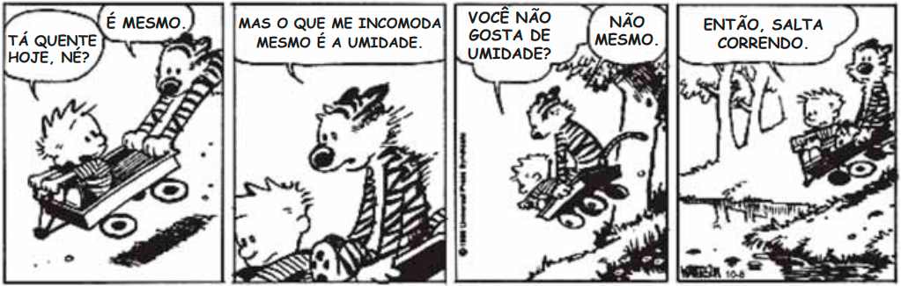
WATTERSON, B. Disponível em: https://novaescola.org.br. Acesso em: 11 ago. 2014.
O incômodo mencionado pelo personagem da tirinha deve-se ao fato de que, em dias úmidos,
Questao 126
Um garoto precisa montar um circuito que acenda três lâmpadas de cores diferentes, uma de cada vez. Ele dispõe das lâmpadas, de fios, uma bateria e dois interruptores, como ilustrado, junto com seu símbolo de três pontos. Quando esse interruptor fecha AB, abre BC e vice-versa.
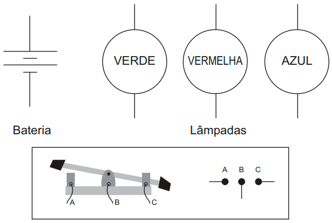
O garoto fez cinco circuitos elétricos usando os dois interruptores, mas apenas um satisfaz a sua necessidade.
Esse circuito é representado por
Questao 127
Estudo aponta que a extinção de preguiças-gigantes, cuja base da dieta eram frutos e sementes, provocou impactos consideráveis na vegetação do Pantanal brasileiro. A flora, embora não tenha desaparecido, tornou-se menos abundante que no passado, além de ocupar áreas mais restritas.
BICUDO, F. Jardineiros da pesada. Ecologia. Pesquisa Fapesp, ed. 231, maio 2015 (adaptado).
O evento descrito com a flora ocorreu em razão da redução
Questao 128
Carros elétricos estão cada vez mais baratos, no entanto, os órgãos governamentais e a indústria se preocupam com o tempo de recarga das baterias, que é muito mais lento quando comparado ao tempo gasto para encher o tanque de combustível. Portanto, os usuários de transporte individual precisam se conscientizar dos ganhos ambientais dessa mudança e planejar com antecedência seus percursos, pensando em pausas necessárias para recargas.
Após realizar um percurso de 110 km, um motorista pretende recarregar as baterias de seu carro elétrico, que tem um desempenho médio de 5,0 km/kWh, usando um carregador ideal que opera a uma tensão de 220 V e é percorrido por uma corrente de 20 A.
Quantas horas são necessárias para recarregar a energia utilizada nesse percurso?
Questao 129
Nas angiospermas, além da fertilização da oosfera, existe uma segunda fertilização que resulta num tecido triploide.
Essa segunda fertilização foi importante evolutivamente, pois viabilizou a formação de um tecido de
Questao 130
Com o objetivo de proporcionar aroma e sabor a diversos alimentos, a indústria alimentícia se utiliza de flavorizantes. Em geral, essas substâncias são ésteres, como as apresentadas no quadro.
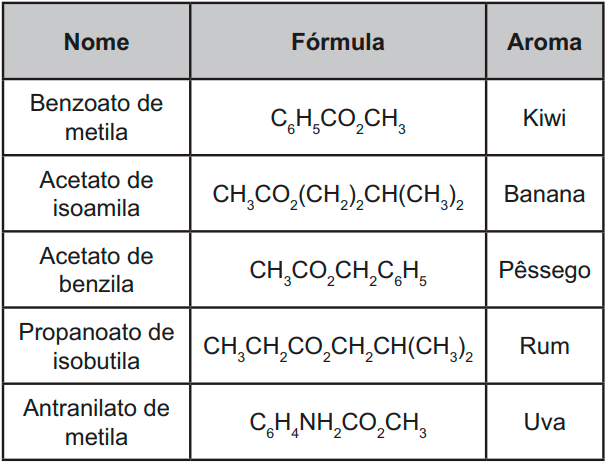
O aroma do flavorizante derivado do ácido etanoico e que apresenta cadeia carbônica saturada é de
Questao 131
O eletrocardiograma é um exame cardíaco que mede a intensidade dos sinais elétricos advindos do coração. A imagem apresenta o resultado típico obtido em um paciente saudável e a intensidade do sinal 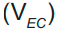 em função do tempo.
De acordo com o eletrocardiograma apresentado, qual foi o número de batimentos cardíacos por minuto desse paciente durante o exame?
Questao 132
A deficiência de lipase ácida lisossômica é uma doença hereditária associada a um gene do cromossomo 10. Os pais dos pacientes podem não saber que são portadores dos genes da doença até o nascimento do primeiro filho afetado. Quando ambos os progenitores são portadores, existe uma chance, em quatro, de que seu bebê possa nascer com essa doença.
ANDERSON, R. A. et. al. In: Situ Localization of the Genetic Locus Encoding the Lysosomal Acid Lipase/Cholesteryl Esterase (LIPA) Deficient in Wolman Disease to Chromosome
10q23.2-q23.3. Genomics, n. 1, jan. 1993 (adaptado).
Essa é uma doença hereditária de caráter
Questao 133
O quadro lista alguns dispositivos eletrônicos que estão presentes no dia a dia, bem como a faixa de força eletromotriz necessária ao seu funcionamento.
Considere que uma bateria é construída pela associação em série de três pilhas de lítio-iodo, nas condições-padrão, conforme as semiequações de redução apresentadas.
Essa bateria é adequada para o funcionamento de qual dispositivo eletrônico?
Questao 134
O alcoolômetro Gay Lussac é um instrumento destinado a medir o teor de álcool, em porcentagem de volume (v/v), de soluções de água e álcool na faixa de 0 °GL a 100 °GL, com divisões de 0,1 °GL. A concepção do alcoolômetro se baseia no princípio de flutuabilidade de Arquimedes, semelhante ao funcionamento de um densímetro. A escala do instrumento é aferida a 20 °C, sendo necessária a correção da medida, caso a temperatura da solução não esteja na temperatura de aferição. É apresentada parte da tabela de correção de um alcoolômetro, com a temperatura.
É necessária a correção da medida do instrumento, pois um aumento na temperatura promove o(a)
Questao 135
O Prêmio Nobel de Química de 2000 deveu-se à descoberta e ao desenvolvimento de polímeros condutores. Esses materiais têm ampla aplicação em novos dispositivos eletroluminescentes (LEDs), células fotovoltaicas etc. Uma propriedade-chave de um polímero condutor é a presença de ligações duplas conjugadas ao longo da cadeia principal do polímero.
ROCHA FILHO, R. C. Polímeros condutores: descoberta e aplicações.
Química Nova na Escola, n. 12, 2000 (adaptado).
Um exemplo desse polímero é representado pela estrutura
MATEMÁTICA E SUAS TECNOLOGIAS
Questões de 136 a 180
Questao 136
Um segmento de reta está dividido em duas partes na proporção áurea quando o todo está para uma das partes na mesma razão em que essa parte está para a outra. Essa constante de proporcionalidade é comumente representada pela letra grega φ, e seu valor é dado pela solução positiva da equação = φ + 1.
Assim como a potência , as potências superiores de φ podem ser expressas da forma aφ + b, em que a e b são inteiros positivos, como apresentado no quadro.
A potência , escrita na forma aφ + b (a e b são inteiros positivos), é
Questao 137
O Atomium, representado na imagem, é um dos principais pontos turísticos de Bruxelas. Ele foi construído em 1958 para a primeira grande exposição mundial depois da Segunda Guerra Mundial, a Feira Mundial de Bruxelas.
Trata-se de uma estrutura metálica construída no formato de um cubo. Essa estrutura está apoiada por um dos vértices sobre uma base paralela ao plano do solo, e a diagonal do cubo, contendo esse vértice, é ortogonal ao plano da base. Centradas nos vértices desse cubo, foram construídas oito esferas metálicas, e uma outra esfera foi construída centrada no ponto de interseção das diagonais do cubo. As oito esferas sobre os vértices são interligadas segundo suas arestas, e a esfera central se conecta a elas pelas diagonais do cubo.
Todas essas interligações são feitas por tubos cilíndricos que possuem escadas em seu interior, permitindo o deslocamento de pessoas pela parte interna da estrutura. Na diagonal ortogonal à base, o deslocamento é feito por um elevador, que permite o deslocamento entre as esferas da base e a esfera do ponto mais alto, passando pela esfera central.
Considere um visitante que se deslocou pelo interior do Atomium sempre em linha reta e seguindo o menor trajeto entre dois vértices, passando por todas as arestas e todas as diagonais do cubo.
A projeção ortogonal sobre o plano do solo do trajeto percorrido por esse visitante é representada por
Questao 138 QUESTÃO ANULADA
A Copa do Brasil teve, até a edição de 2018, 15 times diferentes como campeões da competição, conforme apresentado na imagem. Suponha que, como homenagem aos times campeões, a Confederação Brasileira de Futebol (CBF) pretenda colocar um painel na sua sede. Esse painel teria 6 linhas e, em cada uma delas, 5 placas, referentes a cada edição da competição, com o nome do time vencedor, o brasão e o ano do título. O painel deve ser fabricado de modo que a primeira linha só tenha clubes gaúchos (Internacional, Grêmio e Juventude); a segunda, apenas times cariocas (Flamengo, Vasco e Fluminense); a terceira, somente times mineiros (Cruzeiro e Atlético Mineiro); a quarta, exclusivamente clubes paulistas (Corinthians, Palmeiras, Santos, Paulista FC, Santo André), e as duas últimas sem nenhuma restrição.
Qual expressão determina a quantidade de painéis diferentes que a CBF poderá montar?
Questao 139
Uma rede de hamburgueria tem três franquias em cidades distintas. Visando incluir um novo tipo de lanche no cardápio, o gerente de marketing da rede sugeriu que fossem colocados à venda cinco novos tipos de lanche, em edições especiais. Os lanches foram oferecidos pelo mesmo período de tempo em todos os franqueados. O tipo que apresentasse a maior média por franquia seria incluído definitivamente no cardápio. Terminado o período de experiência, a gerência recebeu um relatório descrevendo as quantidades vendidas, em unidade, de cada um dos cinco tipos de lanche nas três franquias.
Com base nessas informações, a gerência decidiu incluir no cardápio o lanche de tipo
Questao 140
Uma grande rede de supermercados adota um sistema de avaliação dos faturamentos de suas filiais, considerando a média de faturamento mensal em milhão. A matriz da rede paga uma comissão para os representantes dos supermercados que atingirem uma média de faturamento mensal (M), conforme apresentado no quadro.
Um supermercado da rede obteve os faturamentos num dado ano, conforme apresentado no quadro.
Nas condições apresentadas, os representantes desse supermercado avaliam que receberão, no ano seguinte, a comissão de tipo
Questao 141
Aplicativos que gerenciam serviços de hospedagem têm ganhado espaço no Brasil e no mundo por oferecer opções diferenciadas em termos de localização e valores de hospedagem. Em um desses aplicativos, o preço P a ser pago pela hospedagem é calculado considerando um preço por diária d, acrescido de uma taxa fixa de limpeza L e de uma taxa de serviço. Essa taxa de serviço é um valor percentual s calculado sobre o valor pago pelo total das diárias.
Nessa situação, o preço a ser pago ao aplicativo para uma hospedagem de n diárias pode ser obtido pela expressão
Questao 142
O organizador de uma competição de lançamento de dardos pretende tornar o campeonato mais competitivo. Pelas regras atuais da competição, numa rodada, o jogador lança 3 dardos e pontua caso acerte pelo menos um deles no alvo. O organizador considera que, em média, os jogadores têm, em cada lançamento, de probabilidade de acertar um dardo no alvo.
A fim de tornar o jogo mais atrativo, planeja modificar as regras de modo que a probabilidade de um jogador pontuar em uma rodada seja igual ou superior a . Para isso, decide aumentar a quantidade de dardos a serem lançados em cada rodada.
Com base nos valores considerados pelo organizador da competição, a quantidade mínima de dardos que devem ser disponibilizados em uma rodada para tornar o jogo mais atrativo é
Questao 143
O gráfico apresenta o nível de ocupação dos cinco reservatórios de água que abasteciam uma cidade em 2 de fevereiro de 2015.
Nessa data, o reservatório com o maior volume de água era o
Questao 144
Uma pessoa realizou uma pesquisa com alguns alunos de uma escola, coletando suas idades, e organizou esses dados no gráfico.
Qual é a média das idades, em ano, desses alunos?
Questao 145
Em um estudo realizado pelo IBGE em quatro estados e no Distrito Federal, com mais de 5 mil pessoas com 10 anos ou mais, observou-se que a leitura ocupa, em média, apenas seis minutos do dia de cada pessoa. Na faixa de idade de 10 a 24 anos, a média diária é de três minutos. No entanto, no grupo de idades entre 24 e 60 anos, o tempo médio diário dedicado à leitura é de 5 minutos. Entre os mais velhos, com 60 anos ou mais, a média é de 12 minutos.
A quantidade de pessoas entrevistadas de cada faixa de idade seguiu a distribuição percentual descrita no quadro.
Os valores de x e y do quadro são, respectivamente, iguais a
Questao 146
Um zootecnista pretende testar se uma nova ração para coelhos é mais eficiente do que a que ele vem utilizando atualmente. A ração atual proporciona uma massa média de 10 kg por coelho, com um desvio padrão de 1 kg, alimentado com essa ração durante um período de três meses.
O zootecnista selecionou uma amostra de coelhos e os alimentou com a nova ração pelo mesmo período de tempo. Ao final, anotou a massa de cada coelho, obtendo um desvio padrão de 1,5 kg para a distribuição das massas dos coelhos dessa amostra.
Para avaliar a eficiência dessa ração, ele utilizará o coeficiente de variação (CV) que é uma medida de
dispersão definida por CV = , em que s representa o desvio padrão e , a média das massas dos coelhos que foram alimentados com uma determinada ração.
O zootecnista substituirá a ração que vinha utilizando pela nova, caso o coeficiente de variação da distribuição das massas dos coelhos que foram alimentados com a nova ração for menor do que o coeficiente de variação da distribuição das massas dos coelhos que foram alimentados com a ração atual.
A substituição da ração ocorrerá se a média da distribuição das massas dos coelhos da amostra, em quilograma, for superior a
Questao 147
A Cifra de César é um exemplo de um método de codificação de mensagens usado por Júlio César para se comunicar com seus generais.
No método, cada letra era trocada por uma letra que aparecia no alfabeto um número fixo de casas adiante (ou atrás) de forma cíclica. A seguir temos um exemplo em que cada letra é substituída pela que vem três posições à frente.
Para quebrar um código como esse, a análise de frequências das letras de um texto é uma ferramenta importante.
Uma análise do texto do romance O guarani, de José de Alencar, que é composto por 491 631 letras, gerou o seguinte gráfico de frequências:
Um pesquisador acredita que a mediana representa bem o número anual típico de terremotos em um período.
Segundo esse pesquisador, o número anual típico de terremotos de magnitude maior ou igual a 7 é
Questao 149
A receita R de uma empresa ao final de um mês é o dinheiro captado com a venda de mercadorias ou com a prestação de serviços nesse mês, e a despesa D é todo o dinheiro utilizado para pagamento de salários, contas de água e luz, impostos, entre outros. O lucro mensal obtido ao final do mês é a diferença entre a receita e a despesa registradas no mês. O gráfico apresenta as receitas e despesas, em milhão de real, de uma empresa ao final dos cinco primeiros meses de um dado ano.
A previsão para os próximos meses é que o lucro mensal não seja inferior ao maior lucro obtido até o mês de maio.
Nessas condições, o lucro mensal para os próximos meses deve ser maior ou igual ao do mês de
Questao 150
A depressão caracteriza-se por um desequilíbrio na química cerebral. Os neurônios de um deprimido não respondem bem aos estímulos dos neurotransmissores. Os remédios que combatem a depressão têm o objetivo de restabelecer a química cerebral. Com o aumento gradativo de casos de depressão, a venda desses medicamentos está em crescente evolução, conforme ilustra o gráfico.
Veja, 10 fev. 2010 (adaptado).
No período de 2005 a 2009, o aumento percentual no volume de vendas foi de
Questao 151
Um casal está planejando comprar um apartamento de dois quartos num bairro de uma cidade e consultou a página de uma corretora de imóveis, encontrando 105 apartamentos de dois quartos à venda no bairro desejado. Eles usaram um aplicativo da corretora para gerar a distribuição dos preços do conjunto de imóveis selecionados.
O gráfico ilustra a distribuição de frequências dos preços de venda dos apartamentos dessa lista (em mil reais), no qual as faixas de preço são dadas por
]300, 400], ]400, 500], ]500, 600], ]600, 700], ]700, 800],
]800, 900], ]900, 1 000], ]1 000, 1 100], ]1 100, 1 200] e
]1 200, 1 300].
A mesma corretora anuncia que cerca de 50% dos apartamentos de dois quartos nesse bairro, publicados em sua página, têm preço de venda inferior a 550 mil reais. No entanto, o casal achou que essa última informação não era compatível com o gráfico obtido.
Com base no gráfico obtido, o menor preço, p (em mil reais), para o qual pelo menos 50% dos apartamentos apresenta preço inferior a p é
Questao 152
Para a comunicação entre dois navios é utilizado um sistema de codificação com base em valores numéricos. Para isso, são consideradas as operações triângulo ∆ e estrela *, definidas sobre o conjunto dos números reais por x∆y = x2 + xy – y2 e x * y = xy + x.
O navio que deseja enviar uma mensagem deve fornecer um valor de entrada b, que irá gerar um valor de saída, a ser enviado ao navio receptor, dado pela soma das duas maiores soluções da equação (a∆b) * (b∆a) = 0. Cada valor possível de entrada e saída representa uma mensagem diferente já conhecida pelos dois navios.
Um navio deseja enviar ao outro a mensagem “ATENÇÃO!”. Para isso, deve utilizar o valor de entrada b = 1.
Dessa forma, o valor recebido pelo navio receptor será
Questao 153
Um parque temático brasileiro construiu uma réplica em miniatura do castelo de Liechtenstein. O castelo original, representado na imagem, está situado na Alemanha e foi reconstruído entre os anos de 1840 e 1842, após duas destruições causadas por guerras.
O castelo possui uma ponte de 38,4 m de comprimento e 1,68 m de largura. O artesão que trabalhou para o parque produziu a réplica do castelo, em escala. Nessa obra, as medidas do comprimento e da largura da ponte eram, respectivamente, 160 cm e 7 cm.
A escala utilizada para fazer a réplica é
Questao 154
A demografia médica é o estudo da população de médicos no Brasil nos aspectos quantitativo e qualitativo, sendo um dos seus objetivos fazer projeções sobre a necessidade da formação de novos médicos. Um desses estudos gerou um conjunto de dados que aborda a evolução do número de médicos e da população brasileira por várias décadas. O quadro apresenta parte desses dados.
Segundo uma projeção estatística, a variação do número de médicos e o da população brasileira de 2010 para 2020 será a média entre a variação de 1990 para 2000 e a de 2000 para 2010. Com o resultado dessa projeção, determina-se o número de médicos por mil habitantes no ano de 2020.
O número, com duas casas na parte decimal, mais próximo do número de médicos por mil habitantes no ano de 2020 seria de
Questao 155
Um atleta produz sua própria refeição com custo fixo de R$ 10,00. Ela é composta por 400 g de frango, 600 g de batata-doce e uma hortaliça. Atualmente, os preços dos produtos para essa refeição são:
Em relação a esses preços, haverá um aumento de 50% no preço do quilograma de batata-doce, e os outros preços não serão alterados. O atleta deseja manter o custo da refeição, a quantidade de batata-doce e a hortaliça. Portanto, terá que reduzir a quantidade de frango.
Qual deve ser a redução percentual da quantidade de frango para que o atleta alcance seu objetivo?
Questao 156
Uma mola é solta da posição distendida conforme a figura. A figura à direita representa o gráfico da posição P (em cm) da massa m em função do tempo t (em segundo) em um sistema de coordenadas cartesianas. Esse movimento periódico
é descrito por uma expressão do tipo P(t) = A cos (t) ou P(t) = A sen (t), em que A > 0 é a amplitude de deslocamento
máximo e é a frequência, que se relaciona com o período T pela fórmula = .
Considere a ausência de quaisquer forças dissipativas
A expressão algébrica que representa as posições P(t) da massa m, ao longo do tempo, no gráfico, é
Questao 157
Uma construtora, pretendendo investir na construção de imóveis em uma metrópole com cinco grandes regiões, fez uma pesquisa sobre a quantidade de famílias que mudaram de uma região para outra, de modo a determinar qual região foi o destino do maior fluxo de famílias, sem levar em consideração o número de famílias que deixaram a região. Os valores da pesquisa estão
dispostos em uma matriz A = [], i, j ∈ {1, 2, 3, 4, 5}, em que o elemento corresponde ao total de famílias (em dezena) que se mudaram da região i para a região j
durante um certo período, e o elemento é considerado nulo, uma vez que somente são consideradas mudanças entre regiões distintas. A seguir, está apresentada a matriz com os dados da pesquisa.
Qual região foi selecionada para o investimento da construtora
Questao 158
Para realizar um voo entre duas cidades que distam 2 000 km uma da outra, uma companhia aérea utilizava um modelo de aeronave A, capaz de transportar até 200 passageiros. Quando uma dessas aeronaves está lotada de passageiros, o consumo de combustível é de 0,02 litro por quilômetro e por passageiro. Essa companhia resolveu trocar o modelo de aeronave A pelo modelo de aeronave B, que é capaz de transportar 10% de passageiros a mais do que o modelo A, mas consumindo 10% menos combustível por quilômetro e por passageiro.
A quantidade de combustível consumida pelo modelo de aeronave B, em relação à do modelo de aeronave A, em um voo lotado entre as duas cidades, é
Questao 159
Em uma corrida automobilística, os carros podem fazer paradas nos boxes para efetuar trocas de pneus. Nessas trocas, o trabalho é feito por um grupo de três pessoas em cada pneu. Considere que os grupos iniciam o trabalho no mesmo instante, trabalham à mesma velocidade e cada grupo trabalha em um único pneu. Com os quatro grupos completos, são necessários 4 segundos para que a troca seja efetuada. O tempo gasto por um grupo para trocar um pneu é inversamente proporcional ao número de pessoas trabalhando nele. Em uma dessas paradas, um dos trabalhadores passou mal, não pôde participar da troca e nem foi substituído, de forma que um dos quatro grupos de troca ficou reduzido.
Nessa parada específica, com um dos grupos reduzido, qual foi o tempo gasto, em segundo, para trocar os quatro pneus?
Questao 160
Um nutricionista verificou, na dieta diária do seu cliente, a falta de 800 mg do mineral A, de 1 000 mg do mineral B e de 1 200 mg do mineral C. Por isso, recomendou a
compra de suplementos alimentares que forneçam os minerais faltantes e informou que não haveria problema se consumisse mais desses minerais do que o recomendado.
O cliente encontrou cinco suplementos, vendidos em sachês unitários, cujos preços e as quantidades dos minerais estão apresentados a seguir:
• Suplemento I: contém 50 mg do mineral A, 100 mg do mineral B e 200 mg do mineral C e custa R$ 2,00;
• Suplemento II: contém 800 mg do mineral A, 250 mg do mineral B e 200 mg do mineral C e custa R$ 3,00;
• Suplemento III: contém 250 mg do mineral A, 1 000 mg do mineral B e 300 mg do mineral C e custa R$ 5,00;
• Suplemento IV: contém 600 mg do mineral A, 500 mg do mineral B e 1 000 mg do mineral C e custa R$ 6,00;
• Suplemento V: contém 400 mg do mineral A, 800 mg do mineral B e 1 200 mg do mineral C e custa R$ 8,00.
O cliente decidiu comprar sachês de um único suplemento no qual gastasse menos dinheiro e ainda suprisse a falta de minerais indicada pelo nutricionista, mesmo que consumisse alguns deles além de sua necessidade.
Nessas condições, o cliente deverá comprar sachês do suplemento
Questao 161
O administrador de um teatro percebeu que, com o ingresso do evento a R$ 20,00, um show conseguia atrair 200 pessoas e que, a cada R$ 1,00 de redução no preço do ingresso, o número de pessoas aumentava em 40. Ele sabe que os donos do teatro só admitem trabalhar com valores inteiros para os ingressos, pela dificuldade de disponibilizar troco, e pretende convencê-los a diminuir o preço do ingresso. Assim, apresentará um gráfico da arrecadação em função do valor do desconto no preço atual do ingresso.
----
O gráfico que mais se assemelha ao que deve ser elaborado pelo administrador é
Questao 162
O quadro representa a relação entre o preço de um produto (R) e seu respectivo imposto devido (I).
O gráfico que melhor representa essa relação é
Questao 163
A relação de Newton-Laplace estabelece que o módulo volumétrico de um fluido é diretamente proporcional ao quadrado da velocidade do som (em metro por segundo) no fluido e à sua densidade (em quilograma por metro cúbico), com uma constante de proporcionalidade adimensional.
Nessa relação, a unidade de medida adequada para o módulo volumétrico é
Questao 164
Uma pessoa pretende viajar por uma companhia aérea que despacha gratuitamente uma mala com até 10 kg.
Em duas viagens que realizou, essa pessoa utilizou a mesma mala e conseguiu 10 kg com as seguintes combinações de itens:
Para ter certeza de que sua bagagem terá massa de 10 kg, ela decide levar essa mala com duas calças, um sapato e o máximo de camisetas, admitindo que itens do mesmo tipo têm a mesma massa.
Qual a quantidade máxima de camisetas que essa pessoa poderá levar?
Questao 165
Um automóvel apresenta um desempenho médio de 16 km/L. Um engenheiro desenvolveu um novo motor a combustão que economiza, em relação ao consumo do motor anterior, 0,1 L de combustível a cada 20 km percorridos.
O valor do desempenho médio do automóvel com o novo motor, em quilômetro por litro, expresso com uma casa decimal, é
Questao 166
O projeto de um contêiner, em forma de paralelepípedo reto retangular, previa a pintura dos dois lados (interno e externo) de cada uma das quatro paredes com tinta acrílica e a pintura do piso interno com tinta epóxi. O construtor havia pedido, a cinco fornecedores diferentes, orçamentos das tintas necessárias, mas, antes de iniciar a obra, resolveu mudar o projeto original, alterando o comprimento e a largura para o dobro do originalmente previsto, mantendo inalterada a altura. Ao pedir novos orçamentos aos fornecedores, para as novas dimensões, cada um deu uma resposta diferente sobre as novas quantidades de tinta necessárias.
Em relação ao previsto para o projeto original, as novas quantidades de tinta necessárias informadas pelos fornecedores foram as seguintes:
• Fornecedor I: “O dobro, tanto para as paredes
quanto para o piso.”
• Fornecedor II: “O dobro para as paredes e quatro vezes para o piso.”
• Fornecedor III: “Quatro vezes, tanto para as paredes quanto para o piso.”
• Fornecedor IV: “Quatro vezes para as paredes e o dobro para o piso.”
• Fornecedor V: “Oito vezes para as paredes e quatro vezes para o piso.”
Analisando as informações dos fornecedores, o construtor providenciará a quantidade adequada de material. Considere a porta de acesso do contêiner como parte de uma das paredes.
Qual dos fornecedores prestou as informações adequadas, devendo ser o escolhido pelo construtor para a aquisição do material?
Questao 167
Um povoado com 100 habitantes está passando por uma situação de seca prolongada e os responsáveis pela administração pública local decidem contratar a construção de um reservatório. Ele deverá ter a forma de um cilindro circular reto, cuja base tenha 5 metros de diâmetro interno, e atender à demanda de água da população por um período de exatamente sete dias consecutivos. No oitavo dia, o reservatório vazio é completamente reabastecido por carros-pipa.
Considere que o consumo médio diário por habitante é de 120 litros de água. Use 3 como aproximação para π.
Nas condições apresentadas, o reservatório deverá ser construído com uma altura interna mínima, em metro, igual a
Questao 168
Num octaedro regular, duas faces são consideradas opostas quando não têm nem arestas, nem vértices em comum. Na figura, observa-se um octaedro regular e uma de suas planificações, na qual há uma face colorida na cor cinza escuro e outras quatro faces numeradas.
Qual(is) face(s) ficará(ão) oposta(s) à face de cor cinza escuro, quando o octaedro for reconstruído a partir da planificação dada?
Questao 169
O instrumento de percussão conhecido como triângulo é composto por uma barra fina de aço, dobrada em um formato que se assemelha a um triângulo, com uma abertura e uma haste, conforme ilustra a Figura 1.
Uma empresa de brindes promocionais contrata uma fundição para a produção de miniaturas de instrumentos desse tipo. A fundição produz, inicialmente, peças com o formato de um triângulo equilátero de altura h, conforme ilustra a Figura 2. Após esse processo, cada peça é aquecida, deformando os cantos, e cortada em um dos vértices, dando origem à miniatura. Assuma que não ocorram perdas de material no processo de produção, de forma que o comprimento da barra utilizada seja igual ao perímetro do triângulo equilátero representado na Figura 2.
Considere 1,7 como valor aproximado para
Nessas condições, o valor que mais se aproxima da medida do comprimento da barra, em centímetro, é
Questao 170
Uma pessoa comprou uma caneca para tomar sopa, conforme ilustração.
Sabe-se que 1 cm³ = 1 mL e que o topo da caneca é uma circunferência de diâmetro (D) medindo 10 cm, e a base é um círculo de diâmetro (d) medindo 8 cm. Além disso, sabe-se que a altura (h) dessa caneca mede 12 cm (distância entre o centro das circunferências do topo e da base). Utilize 3 como aproximação para π.
Qual é a capacidade volumétrica, em mililitro, dessa caneca?
Questao 171
O dono de uma loja pretende usar cartões imantados para a divulgação de sua loja. A empresa que fornecerá o serviço lhe informa que o custo de fabricação do cartão é de R$ 0,01 por centímetro quadrado e que disponibiliza modelos tendo como faces úteis para impressão:
• um triângulo equilátero de lado 12 cm;
• um quadrado de lado 8 cm;
• um retângulo de lados 11 cm e 8 cm;
• um hexágono regular de lado 6 cm;
• um círculo de diâmetro 10 cm.
O dono da loja está disposto a pagar, no máximo, R$ 0,80 por cartão. Ele escolherá, dentro desse limite de preço, o modelo que tiver maior área de impressão.
Use 3 como aproximação para π e use 1,7 como
aproximação para .
Nessas condições, o modelo que deverá ser escolhido tem como face útil para impressão um
Questao 172
Um ciclista amador de 61 anos de idade utilizou um monitor cardíaco para medir suas frequências cardíacas em quatro diferentes tipos de trechos do percurso. Os resultados das frequências cardíacas máximas alcançadas nesses trechos foram:
Sabe-se que a faixa aeróbica ideal para o ganho de condicionamento físico é entre 65% e 85% da frequência cardíaca máxima (Fc máx.), que, por sua vez, é determinada pela fórmula:
Fc máx. = 220 – idade,
em que a idade é dada em ano e Fc máx. é dada em bpm (batimento por minuto).
Os trechos do percurso nos quais esse ciclista se mantém dentro de sua faixa aeróbica ideal, para o ganho de condicionamento físico, são
Questao 173
Um lava-rápido oferece dois tipos de lavagem de veículos: lavagem simples, ao preço de R$ 20,00, e lavagem completa, ao preço de R$ 35,00. Para cobrir as despesas com produtos e funcionários, e não ter prejuízos, o lava-rápido deve ter uma receita diária de, pelo menos, R$ 300,00.
Para não ter prejuízo, o menor número de lavagens diárias que o lava-rápido deve efetuar é
Questao 174
Após consulta médica, um paciente deve seguir um tratamento composto por três medicamentos: X, Y e Z. O paciente, para adquirir os três medicamentos, faz um orçamento em três farmácias diferentes, conforme o quadro.
Dessas farmácias, algumas oferecem descontos:
• na compra dos medicamentos X e Y na Farmácia 2, recebe-se um desconto de 20% em ambos os produtos, independentemente da compra do medicamento Z, e não há desconto para o medicamento Z;
• na compra dos 3 medicamentos na Farmácia 3, recebe-se 20% de desconto no valor total da compra.
O paciente deseja efetuar a compra de modo a minimizar sua despesa com os medicamentos.
De acordo com as informações fornecidas, o paciente deve comprar os medicamentos da seguinte forma:
Questao 175
Muitos brinquedos que frequentemente são encontrados em praças e parques públicos apresentam formatos de figuras geométricas bidimensionais e tridimensionais. Uma empresa foi contratada para desenvolver uma nova forma de brinquedo. A proposta apresentada pela empresa foi de uma estrutura formada apenas por hastes metálicas, conectadas umas às outras, como apresentado na figura. As hastes de mesma tonalidade e espessura são congruentes.
Com base na proposta apresentada, quantas figuras geométricas planas de cada tipo são formadas pela união das hastes?
Questao 176
O sistema de numeração romano ainda é utilizado na indicação de capítulos e volumes de livros, na designação de séculos e, em ordem cronológica, de papas e reis de mesmo nome. São utilizadas sete letras do alfabeto:
Quatro fundamentais: I (vale 1); X (vale 10); C (vale 100) e M (vale 1 000).
Três secundárias: V (vale 5); L (vale 50) e D (vale 500).
As regras para escrever números romanos são:
1. Não existe símbolo correspondente ao zero;
2. Os símbolos fundamentais podem ser repetidos até três vezes e seus valores são adicionados. Exemplo: XXX = 30;
3. Uma letra posta à esquerda de outra de maior valor indica subtração dos respectivos valores. Exemplo: IX = 10 - 1 = 9;
4. Uma letra posta à direita de outra de maior valor indica adição dos respectivos valores. Exemplo: XI = 10 + 1 = 11.
Em uma cidade europeia há uma placa indicando o ano de sua fundação: MCDLXIX.
Quantos anos de fundação essa cidade comemorará em 2050?
Questao 177
Uma das bases mais utilizadas para representar um número é a base decimal. Entretanto, os computadores trabalham com números na base binária. Nessa base, qualquer número natural é representado usando apenas os algarismos 0 e 1. Por exemplo, as representações dos números 9 e 12, na base binária, são 1001 e 1100, respectivamente. A operação de adição, na base binária, segue um algoritmo similar ao utilizado na base decimal, como detalhado no quadro:
Por exemplo, na base binária, a soma dos números 10 e 10 é 100, como apresentado:
Considerando as informações do texto, o resultado da adição 9 12 será representado, na base binária, por
Questao 178
Uma unidade de medida comum usada para expressar áreas de terrenos de grandes dimensões é o hectare, que equivale a 10 000 m². Um fazendeiro decide fazer um loteamento utilizando 3 hectares de sua fazenda, dos quais 0,9 hectare será usado para a construção de ruas e calçadas e o restante será dividido em terrenos com área de 300 m² cada um. Os 20 primeiros terrenos vendidos terão preços promocionais de R$ 20 000,00 cada, e os demais, R$ 30 000,00 cada.
Nas condições estabelecidas, o valor total, em real, obtido pelo fazendeiro com a venda de todos os terrenos será igual a
Questao 179
Uma pessoa produzirá uma fantasia utilizando como materiais: 2 tipos de tecidos diferentes e 5 tipos distintos de pedras ornamentais. Essa pessoa tem à sua disposição 6 tecidos diferentes e 15 pedras ornamentais distintas.
A quantidade de fantasias com materiais diferentes que podem ser produzidas é representada pela expressão
Questao 180
Os diretores de uma escola precisam construir um laboratório para uso dos alunos. Há duas possibilidades:
(i) um laboratório do tipo A, com capacidade para 100 usuários, a um custo de 180 mil reais e gastos de 60 mil reais por ano para manutenção;
(ii) um laboratório do tipo B, com capacidade para 80 usuários, a um custo de 120 mil reais e gastos com manutenção de 16 mil reais por ano.
Considera-se que, em qualquer caso, o laboratório implantado será utilizado na totalidade de sua capacidade.
A economia da escola, na utilização de um laboratório tipo B, em vez de um laboratório tipo A, num período de 4 anos, por usuário, será de

 , escrita na forma aφ + b (a e b são inteiros positivos), é
, escrita na forma aφ + b (a e b são inteiros positivos), é A cos (t) ou P(t) =
A cos (t) ou P(t) =